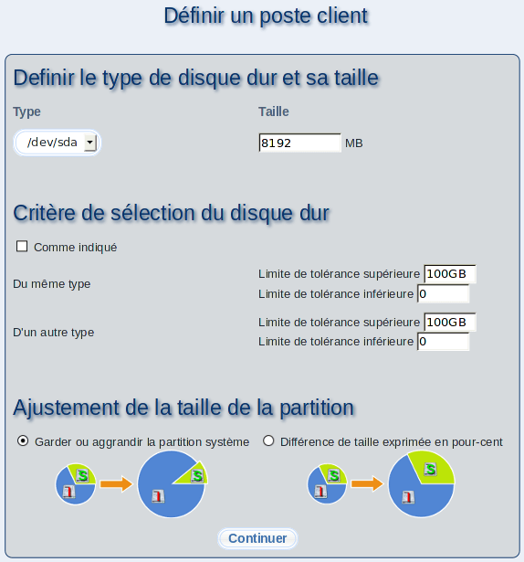

Entrez les propriétés du disque dur pour le poste client maître, puisqu'elles ne peuvent être collectées sur ce dernier. Vous devez définir le type de disque dur (IDE, SCSI) et la taille à utiliser. La taille ainsi définie devrait correspondre, à peu de chose près, à la taille du disque dur des postes client réels.
Sous-sections
root
2017-06-22